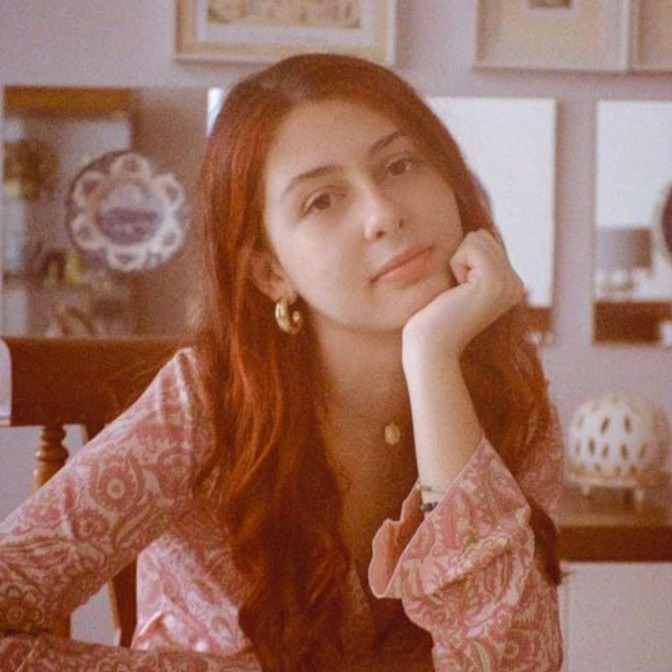

Leticia Stradiotto
Graduanda em Jornalismo, tem 20 e poucos anos, mas já entendeu que ser mulher é desafiar um mundo que não foi feito para a gente — e também criar, do nosso jeito, espaços onde florescer.
Vitória Vulcano

Graduanda em Jornalismo, entusiasta do cinema e apreciadora de histórias. Neta da dona Cida e filha da Solange, espera que o mundo se lembre das mulheres como sempre foram: naturezas nobres demais para serem contidas e altivas demais para se curvarem.
Liliane Ito
Professora universitária e jornalista. Nunca entendeu muito bem a competição explícita entre garotas nos blockbusters hollywoodianos, até se dar conta de que grande parte desses filmes foram dirigidos por homens. Claro, já sentiu na pele o quão nocivas podem ser algumas “amizades” femininas, mas também conhece o poder transformador da sororidade.Tudo isso veio com muita reflexão. Este TCC é uma delas.